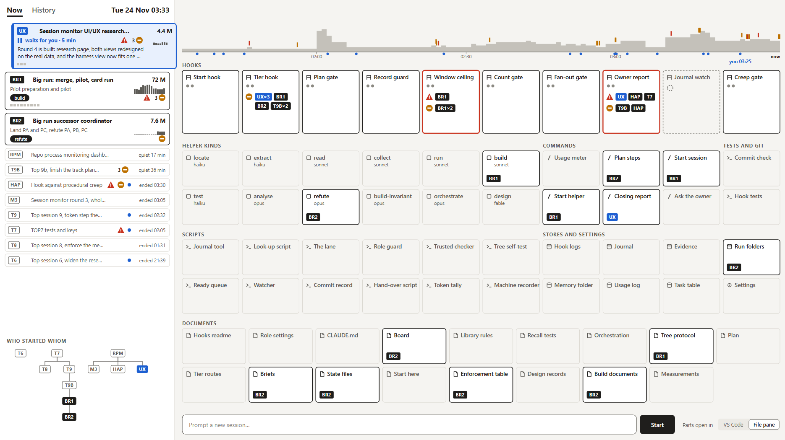
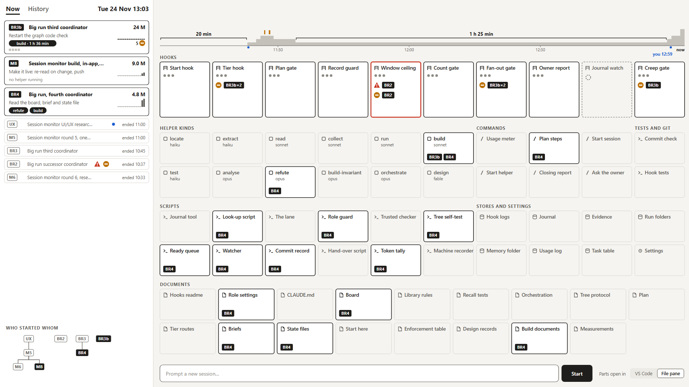
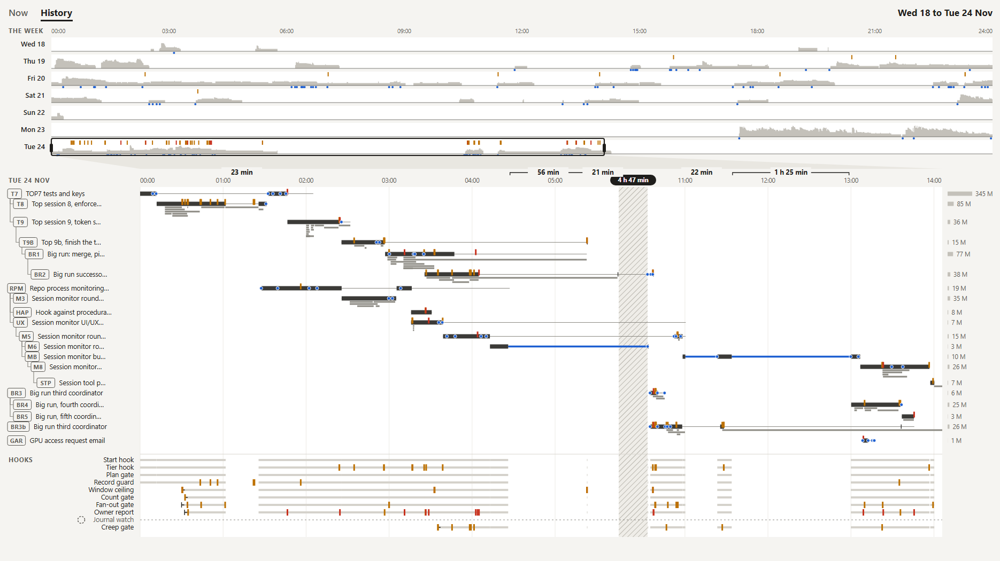
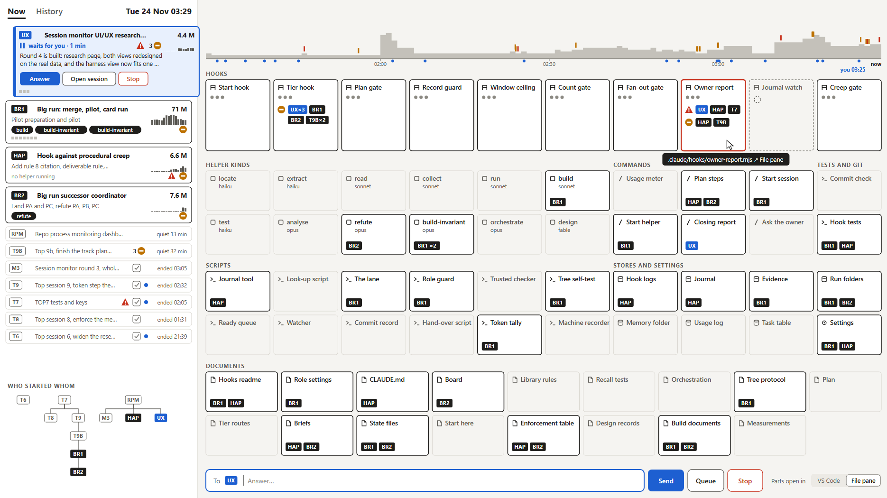

Session tool: three prototypes
Drawn from the real data of Tuesday 24 November. Static pictures; nothing is built yet.
1. Now, 03:33 (the crowded hours)open full size

- Every hook, helper kind, command, script, store and document by name, in a fixed place, grey.
- A session's tag sits on the part it is using. Red = failed, amber = refused, blue = waits for you.
- Left: sessions ordered by need, with their running helpers and tokens. Top: the last two hours.
Now, 13:03 (just after the quiet stretch)open full size

- The top band shows 1 h 25 min with nothing new, then the rise as the fourth big-run coordinator starts.
2. History, the weekopen full size

- Seven day-strips, never cut; white where nothing ran. Tuesday is opened below.
- One lane per session, helpers packed under it, ticks where something broke, blue where it waited for you. 4 h 47 min of quiet folded into one band.
- One row per hook at the bottom, on the same clock.
3. Operate, 03:29open full size

- The session that waits for you is pushed out of line, with Answer, Open session and Stop on it.
- The box at the bottom is addressed to it. A switch sets where parts open: VS Code or the File pane.
What is not there yet
- Skills, slash commands and git are not in the data yet, so they are not on the board.
- In the data the quiet stretch is 11:34 to 12:59: Monitor build waited for your answer. Nothing starts at 12:18. Not checked why.
- The busiest moment in the data has 3 sessions working and 1 waiting. Eight at once is not tested.
- Answering or stopping a session started in the app is not possible today as documented. The buttons show the aim.
- Zoom, live motion and clicks are not built; the rules for smooth motion are written down.